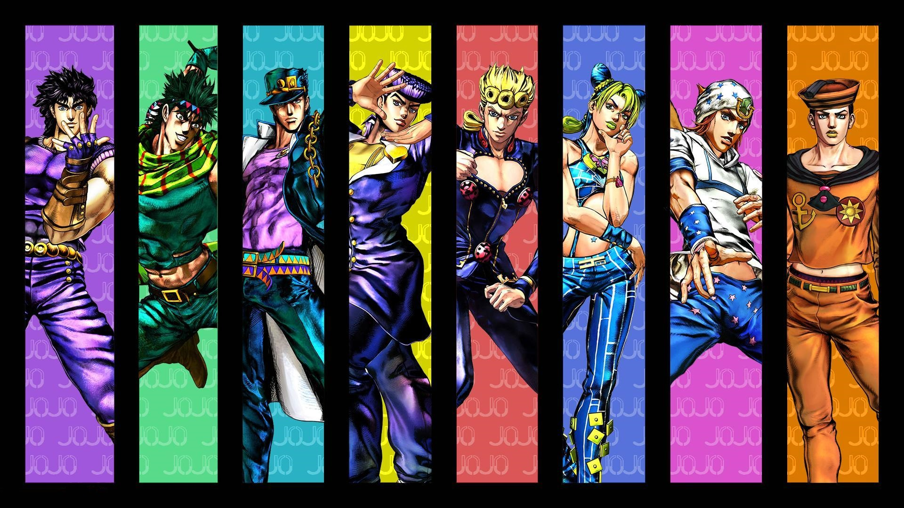
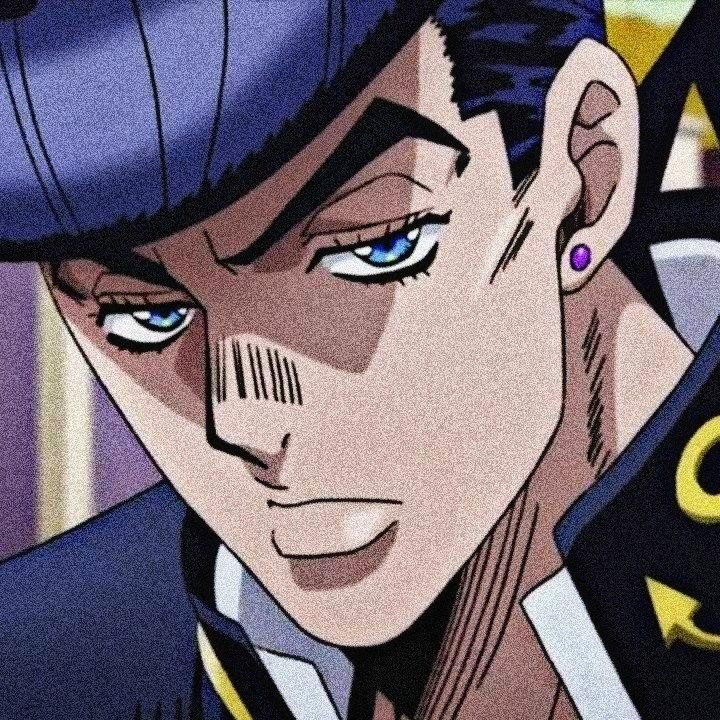
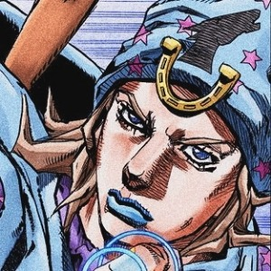
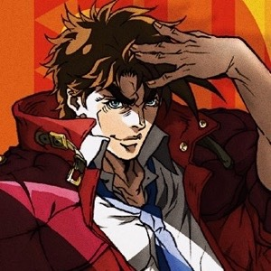
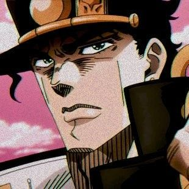

JoJo's Bizarre Adventure is a shonen and seinen manga written and illustrated by Hirohiko Araki.

JoJo Main Characters

Josuke Higashikata is the protagonist of Diamond is Unbreakable and the fourth JoJo of the JoJo's Bizarre Adventure series.

Johnny Joestar, born Jonathan Joestar, is the main protagonist of Steel Ball Run. He is the seventh JoJo of the JoJo's Bizarre Adventure series.

Joseph Joestar is the main protagonist of Part 2 and an ally in Part 3 and 4.

Jotaro Kujo is the protagonist of Part 3. Jotaro is the third and most recurring JoJo of the JoJo's Bizarre Adventure series.
You see, humans progressed little by little, bit by bit over those thousand years... It's nothing major but in the 18th and 19th centuries, magic and other illusions became popular entertainment... and I really love a good illusion!
-Joestar, Joseph
Sign Up To The Newsletter!
Don't miss any updates of this page, just click the button!